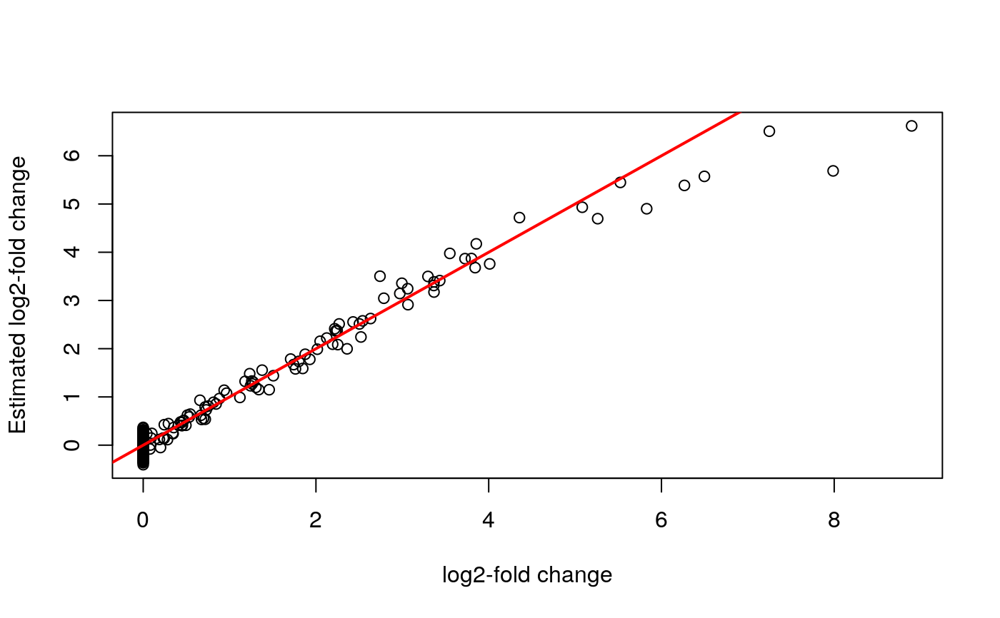

Given a matrix of real RNA-seq counts, this function will
randomly assign samples to one of two groups, draw
the log2-fold change in expression between two groups for each gene,
and add this signal to the RNA-seq counts matrix. The user may specify
the proportion of samples in each group, the proportion of null genes
(where the log2-fold change is 0),
and the signal function. This is a specific application of the
general Poisson thinning approach implemented in thin_diff.
thin_2group(mat, prop_null = 1, signal_fun = stats::rnorm, signal_params = list(mean = 0, sd = 1), group_prop = 0.5, corvec = NULL)
| mat | A numeric matrix of counts. The rows index the genes and the columns index the samples (as is usual in RNA-seq). |
|---|---|
| prop_null | The proportion of genes that are null. |
| signal_fun | A function that returns the signal. This should take as
input |
| signal_params | A list of additional arguments to pass to
|
| group_prop | The proportion of individuals that are in group 1. |
| corvec | A vector of target correlations. |
An S3 object of class ThinData. Components include some or
all of the following:
matThe modified matrix of counts.
designmatThe design matrix, excluding an intercept term.
coefmatA matrix of coefficients corresponding to designmat
svA matrix of estimated surrogate variables.
cormatA matrix of target correlations between the surrogate variables and the permuted variables in the design matrix.
matching_varA matrix of simulated variables used to permute the permuted components of the design matrix.
thin_diffFor the more general thinning approach.
## Simulate data from given matrix of counts ## In practice, you would obtain Y from a real dataset, not simulate it. set.seed(1) nsamp <- 10 ngene <- 1000 Y <- matrix(stats::rpois(nsamp * ngene, lambda = 50), nrow = ngene) thinout <- thin_2group(mat = Y, prop_null = 0.9, signal_fun = stats::rexp, signal_params = list(rate = 0.5)) ## 90 percent of genes are null mean(abs(thinout$coef) < 10^-6)#> [1] 0.9## Check the estimates of the log2-fold change Ynew <- log2(t(thinout$mat + 0.5)) X <- thinout$designmat Bhat <- coef(lm(Ynew ~ X))["X", ] plot(thinout$coefmat, Bhat, xlab = "log2-fold change", ylab = "Estimated log2-fold change")